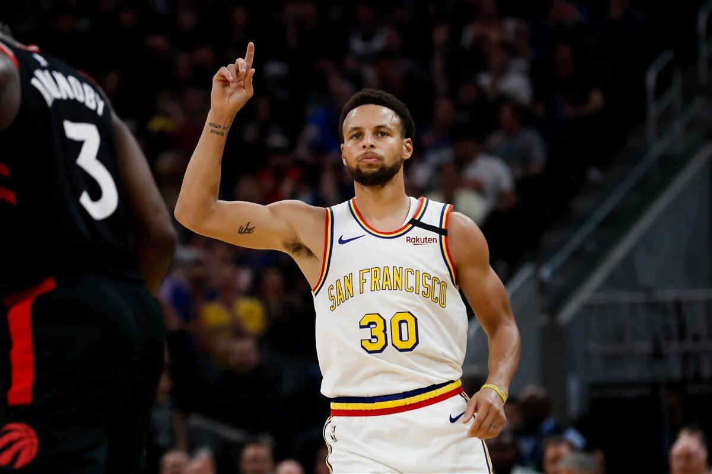

Renowned for his incredible shooting skills, Stephen Curry is one of the most exciting players in the NBA.
Curry has won multiple NBA championships with the Golden State Warriors and holds numerous records for three-point shooting.
Stephen Curry's style of play, characterized by deep three-pointers, has changed the way the game is played and influenced a new generation of players.
He's involved in various charitable activities and is known for his commitment to social justice causes.